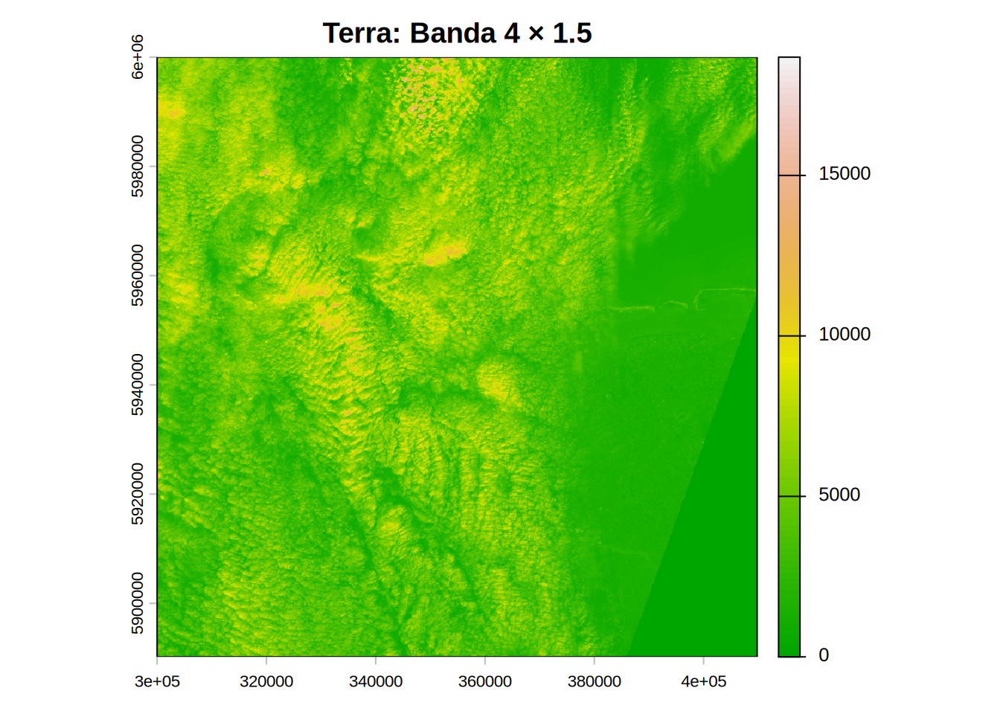
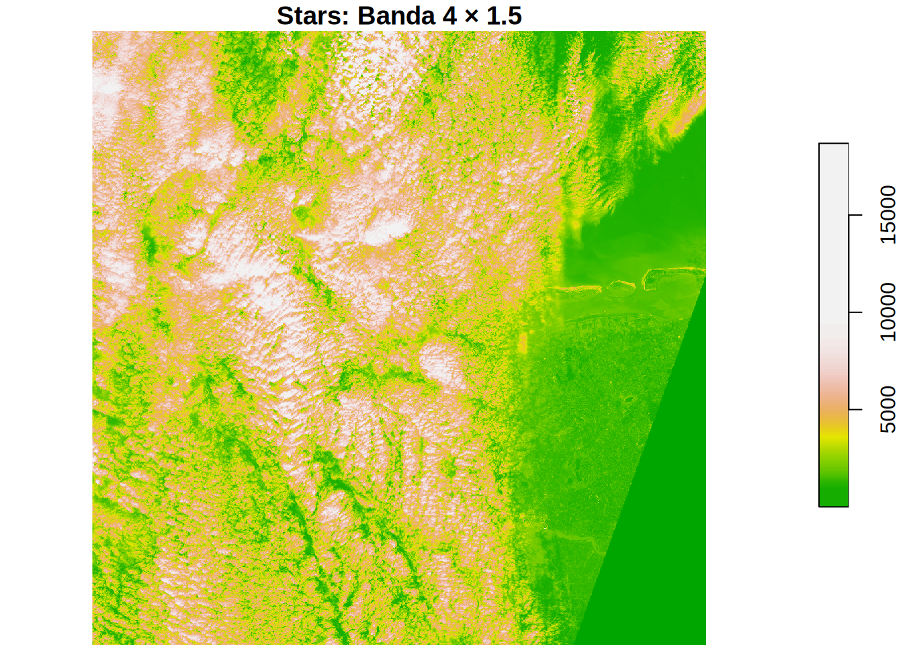

# Código en R
j_eval <- function(cmd) {
.ensure_julia_ready()
lineas <- strsplit(cmd, "\n")[[1]]
buffer_bloque <- ""; en_bloque <- 0; resultado_final <- NULL
for (l in lineas) {
if (trimws(l) == "") next
buffer_bloque <- paste0(buffer_bloque, l, "\n")
abrir <- grepl("\\b(do|function|for|if|begin|let|while)\\b", l) & !grepl("\\bend\\b", l)
cerrar <- grepl("\\bend\\b", l)
en_bloque <- en_bloque + abrir - cerrar
if (en_bloque <= 0) {
res_raw <- JuliaConnectoR::juliaCall("_unal_core_executor", buffer_bloque, FALSE, "", 72, 800, 500, 12)
cat(res_raw)
lineas_res <- strsplit(res_raw, "\n")[[1]]
lineas_res <- trimws(lineas_res[lineas_res != ""])
# Capturamos solo si hay contenido real
temp_res <- tail(lineas_res[!grepl("^julia>", lineas_res)], 1)
if (length(temp_res) > 0) resultado_final <- temp_res
buffer_bloque <- ""; en_bloque <- 0
}
}
if (is.null(resultado_final)) return(NULL) # Evita el error de length zero
val_limpio <- gsub('"', '', resultado_final)
num_val <- suppressWarnings(as.numeric(val_limpio))
return(if (!is.na(num_val)) num_val else val_limpio)
}7 Benchmark de Procesamiento Geoespacial
7.1 Introducción
- Materia: Programación SIG: Python, R, Julia
- Práctica 1: Sentinel-2 (1GB) - R (
terra) vs R (stars) vs Python (rasterio) vs Julia (ArchGDAL + Raster.jl) - Autores: Alexys Rodríguez-Avellaneda Ph.D. & herramientas IA
7.2 Función j_eval en R
7.3 Preparación de los Datos: Sentinel-2A
En este ejercicio procesamos una escena de Sentinel-2A en formato .zip. En lugar de extraer el archivo (lo cual duplicaría el espacio en disco a casi 2GB), usamos el driver VSI (Virtual Systems Interface) de GDAL.
Anatomía de la Imagen
La imagen Sentinel-2 se organiza por bandas. Para este benchmark usaremos la Banda 4 (Red), fundamental para el cálculo de índices de vegetación como el NDVI.
| Banda | Resolución | Longitud de Onda | Uso |
|---|---|---|---|
| B02 (Blue) | 10m | 490 nm | Mapeo de aguas, suelos |
| B03 (Green) | 10m | 560 nm | Vigor de vegetación |
| B04 (Red) | 10m | 665 nm | Absorción de clorofila |
| B08 (NIR) | 10m | 842 nm | Biomasa, salud foliar |
Descubrir la Ruta de la Imagen Sentinel-2
Code
library(starsdata)
library(terra)terra 1.8.93
Attaching package: 'terra'The following object is masked from 'package:grid':
depthCode
library(stars)Loading required package: abindLoading required package: sfLinking to GEOS 3.12.1, GDAL 3.8.4, PROJ 9.4.0; sf_use_s2() is TRUECode
library(reticulate)
# 1. Localización del ZIP dentro del paquete starsdata
f <- "sentinel/S2A_MSIL1C_20180220T105051_N0206_R051_T32ULE_20180221T134037.zip"
granule <- system.file(file = f, package = "starsdata")
granule[1] "/usr/local/lib/R/site-library/starsdata/sentinel/S2A_MSIL1C_20180220T105051_N0206_R051_T32ULE_20180221T134037.zip"Code
base_name <- strsplit(basename(granule), ".zip")[[1]]
base_name[1] "S2A_MSIL1C_20180220T105051_N0206_R051_T32ULE_20180221T134037"Code
# 2. Construcción de la ruta Virtual de GDAL (/vsizip/)
# Esta ruta permite leer directamente el XML de metadatos dentro del ZIP sin descomprimir.
s2_path <- paste0("SENTINEL2_L1C:/vsizip/", granule, "/", base_name, ".SAFE/MTD_MSIL1C.xml:10m:EPSG_32632")
s2_path[1] "SENTINEL2_L1C:/vsizip//usr/local/lib/R/site-library/starsdata/sentinel/S2A_MSIL1C_20180220T105051_N0206_R051_T32ULE_20180221T134037.zip/S2A_MSIL1C_20180220T105051_N0206_R051_T32ULE_20180221T134037.SAFE/MTD_MSIL1C.xml:10m:EPSG_32632"Code
# Guardamos la ruta en un archivo compartido para que Python y Julia la lean
writeLines(s2_path, "s2_shared_path.txt")7.4 Metodología del Benchmark
Este experimento evalúa el rendimiento de cuatro motores geoespaciales ampliamente utilizados —terra (R), stars (R), rasterio (Python) y Rasters.jl (Julia)— frente a una operación numéricamente simple pero computacionalmente exigente sobre datos raster de gran tamaño.
El flujo de trabajo consiste en:
- Apertura del archivo raster Sentinel-2.
- Selección de una sola banda (B4).
- Aplicación de una operación aritmética escalar.
- Cálculo de la media global (mean), que fuerza la evaluación completa del raster.
A diferencia de benchmarks centrados en materialización explícita, este experimento utiliza la operación mean() como operación común de evaluación, permitiendo que cada motor ejecute el cálculo conforme a su propio modelo interno de ejecución (lazy vs eager).
Dimensión del problema
Una banda Sentinel-2 a 10 m de resolución contiene:
\[10.980 \times 10.980 = 120.560.400 \text{ píxeles}\]
Asumiendo datos en punto flotante de 32 bits (4 bytes), el volumen teórico mínimo es:
\[120.560.400 \times 4 \approx 482{,}24 \text{ MB}\]
Este tamaño excede ampliamente la caché de CPU, por lo que el experimento está dominado por I/O, acceso a memoria y eficiencia de recorrido, no por complejidad algorítmica.
Exclusiones deliberadas
- La generación de gráficos (plotting) se ejecuta fuera del bloque cronometrado.
- El tiempo de renderizado y escritura en disco no refleja la velocidad de procesamiento numérico.
- En Julia, se realiza una ejecución previa (warm-up) para excluir el costo de compilación Just-In-Time (JIT) del tiempo reportado.
- En Python y R, el código numérico crítico se ejecuta en librerías ya compiladas (GDAL, NumPy, C/C++), por lo que no existe un costo de compilación comparable. Cualquier efecto de “calentamiento” en estos casos se limita a inicialización de librerías y caché de disco, y no altera de forma significativa los tiempos medidos.
Etapas del proceso evaluado
| Etapa | Descripción técnica | Implementación por motor |
|---|---|---|
| 1. Apertura del dataset | Lectura de metadatos y establecimiento de conexión al raster (sin carga completa a RAM) | R / terra: rast() R / stars: read_stars(proxy = TRUE) Python / rasterio: rasterio.open() Julia / ArchGDAL + Rasters.jl: ArchGDAL.read() |
| 2. Selección de banda B4 | Referencia a la banda espectral sin materializar todos los píxeles | R / terra: r[[1]] R / stars: s[,,,1] Python / rasterio: src.read(1) Julia / Rasters.jl: Raster(ds)[Band(1)] |
| 3. Operación aritmética escalar | Multiplicación de cada píxel por un factor constante (1.5) | R / terra: b4 * 1.5 R / stars: b4 * 1.5 Python / NumPy: b4 * 1.5 Julia / Rasters.jl: r .* 1.5 |
| 4. Reducción global (mean) | Cálculo de la media global, forzando el recorrido completo del raster | R / terra: global(res_terra, "mean", na.rm = TRUE)[1, 1] (streaming) R / stars: mean(as.vector(res_mem[[1]]), na.rm = TRUE) (tras materialización explícita) Python / NumPy: res.mean() (array ya en RAM) Julia / Rasters.jl: mean(res) (streaming lazy) |
Interpretación clave del paso de reducción (mean)
El cálculo de la media es fundamental porque:
- Obliga a recorrer todos los píxeles del raster.
- Garantiza que la operación aritmética fue realmente ejecutada.
- Permite forzar la evaluación completa del flujo de cálculo sin introducir operaciones adicionales.
No obstante, cada motor implementa este paso de forma distinta: algunos realizan la reducción en streaming sin materializar el raster completo, mientras que otros requieren una materialización explícita en memoria. Estas diferencias responden a decisiones de diseño propias de cada librería y constituyen una limitación inevitable de la comparación.
Diferencias estructurales entre motores
Cada motor está optimizado para un tipo distinto de análisis. terra y rasterio están especialmente afinados para cálculos numéricos simples sobre grandes volúmenes de datos, mientras que stars y Rasters.jl priorizan flexibilidad y modelos de datos más generales, lo cual puede afectar el rendimiento en operaciones simples como una media global.
| Motor | ¿Cómo trabaja internamente? | ¿Qué implica en este benchmark? |
|---|---|---|
| terra (R) | Usa archivos raster “por referencia” y hace los cálculos en C++ | Recorre el raster una sola vez de forma muy eficiente |
| stars (R) | Maneja los datos como cubos multidimensionales con mucha información espacial | Es más flexible, pero la media global es más lenta por el manejo de metadatos |
| rasterio (Python) | Carga la banda completa en un arreglo NumPy | Los datos quedan contiguos en memoria y se procesan muy rápido |
| Rasters.jl (Julia) | Evalúa las operaciones paso a paso y por bloques | Es muy general, pero en este caso introduce más sobrecarga |
Limitaciones inevitables del benchmark
Este benchmark no mide qué lenguaje es “más rápido”, sino cómo funciona todo el conjunto de herramientas que usa cada uno (librerías, forma de leer datos y manera de calcular).
En particular:
- Python (rasterio) es muy rápido porque lee la banda completa en memoria y usa arreglos NumPy optimizados.
- terra (R) está muy bien optimizado para hacer operaciones matemáticas sobre rasters usando código en C++.
- stars (R) se enfoca en manejar bien la información espacial y los metadatos, lo que hace más lenta una media global.
- Julia (Rasters.jl) está pensado para análisis espaciales más generales y flexibles, no para un único cálculo masivo como en NumPy.
Por eso, estos resultados deben interpretarse así:
Miden el rendimiento para una tarea específica (leer un raster y calcular una media),
No un ranking general de lenguajes de programación.
Interpretación del benchmark
Este benchmark representa un caso extremo y muy simplificado:
- Se utiliza una sola banda raster.
- Se aplica una operación matemática trivial (multiplicación escalar).
- Se calcula una única media global.
Por lo tanto, no evalúa:
- Análisis con múltiples bandas.
- Operaciones espaciales complejas (vecindarios, máscaras, reproyecciones).
- Flujos de trabajo largos, iterativos o modelos estadísticos.
El objetivo no es declarar un “lenguaje ganador”, sino entender los costos reales de: - leer los datos, - manejar las abstracciones, - y calcular una estadística global.
¿Qué significa “manejar las abstracciones”?
Las abstracciones son capas de software que facilitan el trabajo del usuario.
Estas capas se encargan de:
- Leer los datos de forma segura.
- Mantener la información espacial (coordenadas, resolución, extensión).
- Coordinar las operaciones sin que el usuario controle cada paso.
Aunque hacen el código más claro y seguro, introducen un costo adicional, que se vuelve visible en operaciones simples y masivas, como una reducción global (mean).
Nivel de abstracción por motor
| Motor / librería | Nivel de abstracción | Forma de trabajar (idea intuitiva) |
|---|---|---|
| Python / rasterio + NumPy | Baja | “Aquí tienes un arreglo de números en memoria, hagamos cuentas rápido” |
| R / terra | Media | “Yo manejo el raster y optimizo las operaciones por ti” |
| R / stars | Alta | “Además de los valores, manejo dimensiones, tiempo, atributos y geometría” |
| Julia / Rasters.jl | Flexible | “Construyo un flujo de operaciones que se evalúa cuando es necesario” |
Idea clave:
> A mayor nivel de abstracción, mayor comodidad y expresividad para el usuario,
> pero también mayor costo computacional en operaciones simples como una media global.
7.5 Análisis de Rendimiento y Paralelismo
Benchmark en Python vs. Julia
rasterio es la navaja suiza de Python para rasters. Al combinarse con NumPy, utiliza instrucciones SIMD que paralelizan el cálculo a nivel de procesador (vectorización), aunque la lectura de GDAL sigue siendo monohilo.
Code
import rasterio
import numpy as np
import matplotlib.pyplot as plt
import time
import gc
# ------------------------------------------------
# 1. Leer ruta compartida
# ------------------------------------------------
with open("s2_shared_path.txt", "r") as f:
s2_path = f.read().strip()
# ------------------------------------------------
# 2. WARM-UP (compila + cachea)
# ------------------------------------------------
with rasterio.open(s2_path) as src:
_ = (src.read(1) * 1.5).mean()
gc.collect()480Code
# ------------------------------------------------
# 3. BENCHMARK REAL
# ------------------------------------------------
t0 = time.perf_counter()
with rasterio.open(s2_path) as src:
b4 = src.read(1) # lectura banda 4
res = b4 * 1.5 # operación
m_py = res.mean() # FORZADO REAL
t_python = time.perf_counter() - t0
print(f"🐍 Python: {t_python:.3f} seg | mean = {m_py:.6f}")🐍 Python: 2.479 seg | mean = 3766.624630Code
# ------------------------------------------------
# 4. Plot (FUERA DEL BENCHMARK)
# ------------------------------------------------
plt.imshow(res, cmap="terrain")<matplotlib.image.AxesImage object at 0x7fde773a9d90>Code
plt.title("Python: Banda 4 × 1.5")Text(0.5, 1.0, 'Python: Banda 4 × 1.5')Code
plt.axis("off")(np.float64(-0.5), np.float64(10979.5), np.float64(10979.5), np.float64(-0.5))Code
plt.show()
Code
# ------------------------------------------------
# 5. Limpieza
# ------------------------------------------------
del b4, res
#gc.collect()Code
# Aquí es donde creamos t_python para R de la variable t_python en Python. Lo necesitamos en R para la tabla final.
# Extraemos el valor desde el objeto 'py'
t_python <- py$t_python
#t_python <- 0
cat("🐍 Tiempo capturado de Python:", round(t_python, 3), "seg.")🐍 Tiempo capturado de Python: 2.479 seg.Julia es el único de los cuatro motores evaluados que puede explotar paralelismo multihilo en esta operación específica, sin recurrir a librerías externas adicionales, aprovechando los núcleos asignados al contenedor.
Code
# 1. Desde R, llamamos a julia con j_eval (la función al inicio de este archivo o en el Rprofile)
# Ejecutamos dos veces:
# la primera compila "costo de arranque" (JIT),
# la segunda mide el tiempo
t_julia <- j_eval('
using Rasters, ArchGDAL, Statistics, Plots
# Evita restricciones artificiales de memoria
Rasters.checkmem!(false)
# ------------------------------------------------
# 1. Leer ruta compartida
# ------------------------------------------------
path = strip(read("s2_shared_path.txt", String))
# ------------------------------------------------
# 2. FUNCIÓN DE BENCHMARK (proxy + mean)
# ------------------------------------------------
function process_band_mean(path)
ArchGDAL.read(path) do ds
r = Raster(ds)[Band(1)] # proxy, solo banda 4
res = r .* 1.5 # operación lazy
return mean(res) # FORZADO REAL (streaming)
end
end
# ------------------------------------------------
# 3. WARM-UP (compilación)
# ------------------------------------------------
process_band_mean(path)
GC.gc()
# ------------------------------------------------
# 4. BENCHMARK REAL
# ------------------------------------------------
t0 = time_ns()
m_julia = process_band_mean(path)
t1 = time_ns()
t_julia = (t1 - t0) / 1e9
println("🟣 Julia: ", round(t_julia, digits=3), " seg | mean = ", round(m_julia, digits=6))
# ------------------------------------------------
# 5. Plot (FUERA DEL BENCHMARK, proxy)
# ------------------------------------------------
ArchGDAL.read(path) do ds
r = Raster(ds)[Band(1)]
res = r .* 1.5
p = plot(res, colormap = :terrain,
title = "Julia: Banda 4 × 1.5")
savefig(p, "julia_plot.png")
end
# Debe ser la última para que j_eval en R capture solo el número
t_julia
')Starting Julia ...julia> using Rasters, ArchGDAL, Statistics, Plots
julia> # Evita restricciones artificiales de memoria
julia> Rasters.checkmem!(false)
false
julia> # ------------------------------------------------
julia> # 1. Leer ruta compartida
julia> # ------------------------------------------------
julia> path = strip(read("s2_shared_path.txt", String))
"SENTINEL2_L1C:/vsizip//usr/local/lib/R/site-library/starsdata/sentinel/S2A_MSIL1C_20180220T105051_N0206_R051_T32ULE_20180221T134037.zip/S2A_MSIL1C_20180220T105051_N0206_R051_T32ULE_20180221T134037.SAFE/MTD_MSIL1C.xml:10m:EPSG_32632"
julia> # ------------------------------------------------
julia> # 2. FUNCIÓN DE BENCHMARK (proxy + mean)
julia> # ------------------------------------------------
julia> function process_band_mean(path)
ArchGDAL.read(path) do ds
r = Raster(ds)[Band(1)] # proxy, solo banda 4
res = r .* 1.5 # operación lazy
return mean(res) # FORZADO REAL (streaming)
end
end
process_band_mean (generic function with 1 method)
julia> # ------------------------------------------------
julia> # 3. WARM-UP (compilación)
julia> # ------------------------------------------------
julia> process_band_mean(path)
3766.6246303263756
julia> GC.gc()
julia> # ------------------------------------------------
julia> # 4. BENCHMARK REAL
julia> # ------------------------------------------------
julia> t0 = time_ns()
0x00000fd876d38f9b
julia> m_julia = process_band_mean(path)
3766.6246303263756
julia> t1 = time_ns()
0x00000fdb25fbd08b
julia> t_julia = (t1 - t0) / 1e9
11.528585456
julia> println("🟣 Julia: ", round(t_julia, digits=3), " seg | mean = ", round(m_julia, digits=6))
🟣 Julia: 11.529 seg | mean = 3766.62463
julia> # ------------------------------------------------
julia> # 5. Plot (FUERA DEL BENCHMARK, proxy)
julia> # ------------------------------------------------
julia> ArchGDAL.read(path) do ds
r = Raster(ds)[Band(1)]
res = r .* 1.5
p = plot(res, colormap = :terrain,
title = "Julia: Banda 4 × 1.5")
savefig(p, "julia_plot.png")
end
"/home/rstudio/work/01_prog_sig/julia_plot.png"
julia> # Debe ser la última para que j_eval en R capture solo el número
julia> t_julia
11.528585456Code
# 2. R muestra la imagen guardada por Julia en el HTML
knitr::include_graphics("julia_plot.png")
Code
# 3. Impresión desde R
print(paste("⚡ Tiempo capturado en R:", t_julia, " seg."))[1] "⚡ Tiempo capturado en R: 11.528585456 seg."Benchmark en R: Terra vs Stars
terra está desarrollado sobre C++. Su fortaleza es la velocidad de lectura y el manejo de memoria mediante punteros externos. Paralelismo: Para esta tarea (operación escalar), terra trabaja de forma secuencial (monohilo), confiando en la optimización de sus bucles en C++.
Code
# library(terra)
# ------------------------------------------------
# 0. Inicio del cronómetro
# ------------------------------------------------
t0 <- Sys.time()
# ------------------------------------------------
# 1. Abrir raster en modo proxy (NO RAM)
# ------------------------------------------------
r <- rast(s2_path)
# ------------------------------------------------
# 2. Seleccionar solo la banda 4 (sigue siendo proxy)
# ------------------------------------------------
b4 <- r[[1]]
# ------------------------------------------------
# 3. Operación aritmética (lazy)
# ------------------------------------------------
res_terra <- b4 * 1.5
# ------------------------------------------------
# 4. FORZADO REAL (streaming, sin materializar)
# ------------------------------------------------
m_terra <- global(res_terra, "mean", na.rm = TRUE)[1, 1]
# ------------------------------------------------
# 5. Tiempo total
# ------------------------------------------------
t_terra <- as.numeric(Sys.time() - t0)
cat("🟤 Terra:",
round(t_terra, 3), "seg |",
"mean =", round(m_terra, 6), "\n")🟤 Terra: 4.386 seg | mean = 3766.625 Code
# ------------------------------------------------
# 6. Plot (FUERA DEL BENCHMARK, proxy)
# ------------------------------------------------
plot(res_terra, col = terrain.colors(100),
main = "Terra: Banda 4 × 1.5")
Code
# ------------------------------------------------
# 7. Limpieza
# ------------------------------------------------
rm(r, b4, res_terra)
gc() used (Mb) gc trigger (Mb) max used (Mb)
Ncells 2611046 139.5 4973960 265.7 4973960 265.7
Vcells 5096344 38.9 10146329 77.5 8322556 63.5El paquete stars está especialmente diseñado para trabajar con cubos de datos multidimensionales, como múltiples bandas, series temporales y atributos espaciales complejos. Esta capacidad lo hace muy expresivo y adecuado para análisis espaciales avanzados.
Sin embargo, cuando se utiliza proxy = FALSE, los datos se materializan completamente en la memoria de R. En rasters de gran tamaño, esto puede introducir un mayor costo computacional asociado a:
- Lectura completa de los datos desde disco.
- Copia de grandes matrices a la memoria de R.
- Gestión de metadatos espaciales y dimensionales.
Paralelismo: En operaciones aritméticas simples —como una multiplicación escalar seguida de una media global— ni stars ni terra garantizan paralelismo explícito por defecto. En estos casos, el procesamiento suele realizarse de forma: - Secuencial, o
- Por bloques, dependiendo de la configuración interna del paquete y del backend utilizado (por ejemplo, GDAL).
Code
# library(stars)
# ------------------------------------------------
# 0. Inicio del cronómetro
# ------------------------------------------------
t0 <- Sys.time()
# ------------------------------------------------
# 1. Leer raster como proxy (NO RAM)
# ------------------------------------------------
s <- read_stars(s2_path, proxy = TRUE)
# ------------------------------------------------
# 2. Seleccionar solo la banda 4 (proxy)
# ------------------------------------------------
b4 <- s[,,,1]
# ------------------------------------------------
# 3. Operación aritmética (lazy)
# ------------------------------------------------
res_stars <- b4 * 1.5
# ------------------------------------------------
# 4. FORZADO REAL (materializa la banda resultante)
# ------------------------------------------------
res_mem <- st_as_stars(res_stars)
# ------------------------------------------------
# 5. Media escalar (ya numérica)
# ------------------------------------------------
m_stars <- mean(as.vector(res_mem[[1]]), na.rm = TRUE)
# ------------------------------------------------
# 6. Tiempo total
# ------------------------------------------------
t_stars <- as.numeric(Sys.time() - t0)
cat("🌟 Stars:",
round(t_stars, 3), "seg |",
"mean =", round(m_stars, 6), "\n")🌟 Stars: 9.065 seg | mean = 3766.625 Code
# ------------------------------------------------
# 7. Plot (FUERA DEL BENCHMARK, proxy)
# ------------------------------------------------
plot(res_stars, col = terrain.colors(100),
main = "Stars: Banda 4 × 1.5")downsample set to 8
Code
# ------------------------------------------------
# 8. Limpieza
# ------------------------------------------------
rm(s, b4, res_stars)
gc() used (Mb) gc trigger (Mb) max used (Mb)
Ncells 2662592 142.2 4973960 265.7 4973960 265.7
Vcells 127748033 974.7 562386494 4290.7 702621380 5360.67.6 Resultados Finales
A continuación, se presenta la comparativa de rendimiento para procesar la Banda 4 (Red) de 10m desde el archivo comprimido original.
Motor Lenguaje Paralelismo Tiempo_Seg
1 R: terra R (C++) Monohilo 4.386053
2 R: stars R Monohilo 9.065462
3 Python: rasterio Python (C++/NumPy) SIMD (Vectorizado) 2.478776
4 Julia: Rasters.jl Julia (Nativo) Multihilo (12 hilos) 11.528585| Motor | Lenguaje | Paralelismo | Tiempo (s) | Eficiencia (X) |
|---|---|---|---|---|
| R: terra | R (C++) | Monohilo | 4.386 | 2.63 |
| R: stars | R | Monohilo | 9.065 | 1.27 |
| Python: rasterio | Python (C++/NumPy) | SIMD (Vectorizado) | 2.479 | 4.65 |
| Julia: Rasters.jl | Julia (Nativo) | Multihilo (12 hilos) | 11.529 | 1.00 |
Los tiempos no deben compararse fuera del contexto de este patrón de acceso (lectura secuencial + reducción global).
El benchmark favorece motores optimizados para recorridos contiguos de memoria y reducciones monolíticas, en particular NumPy (vía rasterio en Python) y el motor C++ interno de
terraen R, los cuales pueden ejecutar la operación aritmética y el cálculo estadístico en una única pasada sobre un bloque contiguo de datos en memoria.
En contraste, motores basados en evaluaciones diferidas (lazy evaluation) y procesamiento por bloques con mayor carga de metadatos, como stars en R y Rasters.jl en Julia, incurren en mayor overhead de abstracción y llamadas intermedias, lo que afecta su desempeño relativo en este escenario específico.
- Eficiencia de Memoria:
terraes el ganador aquí, ya que su gestión de objetos fuera de la RAM de R le permite manejar archivos gigantes sin colapsar. - Paralelismo Real: Solo Julia aprovecha los hilos de ejecución de la CPU para la operación matemática de forma nativa. Python usa optimización de hardware (SIMD) vía NumPy, mientras que R se mantiene secuencial pero optimizado en sus librerías de C++.
- GDAL VSI: Todos los lenguajes demostraron que el driver
/vsizip/es la forma más eficiente de interactuar con datos Sentinel-2 sin el costo de descompresión.
Julia: paralelismo y pipelines composables
El potencial de paralelismo multihilo no siempre se traduce en mejores tiempos en benchmarks simples como el presente. Esto se debe a que Julia, a través de Rasters.jl, utiliza un modelo basado en pipelines composables.
Un pipeline composable significa que las operaciones no se ejecutan inmediatamente. En su lugar, Julia construye un flujo de operaciones (lectura → selección de banda → operación aritmética → reducción) que se evalúa solo cuando se solicita un resultado final, como la media global.
Este enfoque tiene ventajas claras en análisis complejos y encadenados, pero introduce un costo adicional de planificación y abstracción que se vuelve visible en tareas muy simples y masivas, como una única multiplicación seguida de una reducción global.
En otras palabras, Julia está optimizada para flujos de trabajo complejos, no para reducciones monolíticas de una sola pasada al estilo NumPy.
| Herramienta / librería | ¿Pipeline composable? | Ejemplo típico |
|---|---|---|
| Julia (Rasters.jl) | ✅ Sí | mean(r .* 1.5) → se evalúa al final |
| R (dplyr + dbplyr) | ✅ Sí* | Cadena de transformaciones luego collect() |
| Python (xarray + Dask) | ✅ Sí | result = data.mean() luego compute() |
| Apache Spark | ✅ Sí | Plan de ejecución (DAG) antes de correr |
| Python (rasterio + NumPy) | ❌ No | Lee y calcula todo inmediatamente |
| R (terra) | ⚠️ Parcial | Optimiza en C++ pero no expone pipeline diferido |
| R (stars) | ❌ No | proxy limitado, sin DAG composable completo |
* Nota sobre R (dplyr + dbplyr):
No es una solución espacial por sí misma. El pipeline composable existe, pero requiere un backend espacial (por ejemplo: PostGIS, DuckDB + spatial, Spark, BigQuery GIS). Sin ese backend, no aplica directamente a raster/cubos geoespaciales.
Nota sobre stars:
Aunque puede trabajar con proxy = TRUE, stars no implementa un pipeline composable tipo tidyverse, ni un DAG diferido completo. Las operaciones tienden a materializar datos relativamente pronto y no se integran con dplyr/dbplyr para optimización global del flujo.
7.7 Más allá del benchmark: optimización y virtualización de datos geoespaciales
Este benchmark evalúa un caso simple y controlado, pero los proyectos reales con grandes volúmenes de datos geoespaciales rara vez dependen de un solo archivo raster leído de forma local. Hoy en día existen múltiples estrategias para optimizar el rendimiento, muchas de las cuales se basan en virtualización del acceso a datos y formatos eficientes.
Algunas de las principales alternativas que deben considerarse en proyectos de gran escala son:
Formatos optimizados para alto volumen
Cloud Optimized GeoTIFF (COG)
Permite leer solo las partes necesarias del raster mediante acceso por bloques y overviews, sin descargar el archivo completo.Zarr / GeoZarr
Formato orientado a datos multidimensionales y computación distribuida. Muy eficiente para acceso parcial, paralelismo y almacenamiento en la nube.GeoParquet
Formato columnar optimizado para datos vectoriales masivos. Ideal para análisis a gran escala, consultas selectivas y procesamiento distribuido.
Virtualización y acceso remoto
GDAL VFS (
/vsicurl/,/vsis3/,/vsiaz/)
Permite trabajar con datos remotos como si fueran archivos locales, leyendo solo los bloques necesarios.STAC (SpatioTemporal Asset Catalog)
Facilita la búsqueda y acceso estructurado a grandes catálogos de datos espaciales distribuidos.
Paralelismo y ejecución distribuida
- Procesamiento por bloques y multihilo (GDAL, terra, rasterio)
- Frameworks distribuidos como Dask, Spark o Ray, especialmente combinados con Zarr o Parquet.
- Aceleración en la nube mediante almacenamiento objeto y cómputo escalable.
Mensaje clave
Este ejercicio muestra los costos mínimos inevitables de leer, abstraer y reducir datos raster. Sin embargo, la verdadera optimización en proyectos reales no suele venir de cambiar de lenguaje, sino de:
- Elegir formatos de datos adecuados.
- Minimizar movimientos innecesarios de datos.
- Aprovechar acceso parcial, paralelismo y virtualización.
- Diseñar flujos de trabajo pensados desde el inicio para grandes volúmenes.
En resumen:
> Cuando los datos crecen, la arquitectura y el formato importan tanto o más que el lenguaje.
7.8 🏁 Desafío de Laboratorio: Primer Día
Para cerrar esta sesión del “Duelo de Titanes”, deberán resolver el siguiente desafío práctico.
Pueden apoyarse en herramientas de IA para investigar, pero recuerden:
Buscamos precisión y evidencia, no “carreta”.
Este laboratorio incluye ejecución real de código en distintos entornos.
🛠️ Instrucciones de Entrega
- Creen un nuevo repositorio en su GitHub personal llamado
taller1-sig. - Todas las respuestas escritas deben estar en un archivo
respuestas.qmd. - Rendericen
respuestas.qmda HTML y PDF. - Suban al repositorio:
respuestas.qmdrespuestas.htmlrespuestas.pdf- Los notebooks y scripts solicitados (ver abajo).
⚙️ Parte A — Ejecución en JupyterLab (Notebooks)
Ejecuten los cuatro procesos del benchmark desde JupyterLab, usando el kernel adecuado para cada lenguaje.
📒 Notebooks obligatorios
Creen los siguientes notebooks:
01_benchmark_terra.ipynb
02_benchmark_stars.ipynb
03_benchmark_rasterio.ipynb
04_benchmark_rasters_julia.ipynb
Cada notebook debe:
- Leer el raster
- Aplicar la operación matemática (× 1.5)
- Calcular la media global
- Imprimir el tiempo total de ejecución
📌 Entrega: - Suban los cuatro notebooks al repositorio. - En respuestas.qmd, incluyan: - El tiempo reportado por cada motor - Una breve observación (1–2 líneas) por notebook
🖥️ Parte B — Ejecución desde VS Code (Terminal Integrada)
Ahora repitan el benchmark fuera de Jupyter, usando la terminal integrada de VS Code.
📄 Scripts obligatorios
Creen los siguientes archivos:
benchmark_terra.Rbenchmark_stars.Rbenchmark_rasterio.pybenchmark_rasters.jl
Cada script debe:
- Leer el raster
- Ejecutar la operación
- Calcular la media global
- Imprimir:
- El tiempo total
- El valor de la media
▶️ Ejecución esperada
Desde la terminal de VS Code:
Rscript benchmark_terra.R
Rscript benchmark_stars.R
python3 benchmark_rasterio.py
julia benchmark_rasters.jl📌 Entrega: - Suban los cuatro scripts al repositorio. - Reporten los tiempos obtenidos en respuestas.qmd.
🪟 Parte C — Ejecución desde Windows Terminal (PowerShell)
Finalmente, ejecuten los procesos sin usar VS Code ni Jupyter, directamente desde Windows Terminal (PowerShell), trabajando con Docker.
Pueden usar una o ambas opciones.
Opción 1️⃣ — Entrando al intérprete
Ejemplos:
docker exec -it contenedor_sig_unal R
docker exec -it contenedor_sig_unal python3
docker exec -it contenedor_sig_unal juliaY luego ejecutar el script correspondiente dentro del intérprete.
Opción 2️⃣ — Ejecución directa
Ejemplos:
docker exec contenedor_sig_unal Rscript benchmark_terra.R
docker exec contenedor_sig_unal Rscript benchmark_stars.R
docker exec contenedor_sig_unal python3 benchmark_rasterio.py
docker exec contenedor_sig_unal julia benchmark_rasters.jl📌 Entrega: - Indiquen en respuestas.qmd: - Qué opción usaron - Los tiempos obtenidos - Si notaron diferencias frente a JupyterLab o VS Code
❓ Preguntas de Análisis
1. 📍 Entorno de ejecución
¿Notaron diferencias de tiempo entre:
- JupyterLab
- VS Code (terminal integrada)
- Windows Terminal (PowerShell)
Den una razón técnica posible (overhead del kernel, entorno, proceso, etc.).
2. 🧱 Abstracción en la práctica
¿En qué motor creen que el costo de las abstracciones es más visible?
Relacionen su respuesta con los tiempos observados.
3. 🔥 Julia y el calentamiento
¿El efecto del warm-up de Julia se notó más en algún entorno específico?
Expliquen brevemente por qué.
4. 🧠 Elección informada
Después de ejecutar el benchmark en tres entornos distintos,
¿cambiarían su elección del “Titán” para una emergencia ambiental real?
Justifiquen en máximo 5 líneas.
💡 Nota para el éxito
Este laboratorio no busca que memoricen comandos,
sino que entiendan que el rendimiento depende del stack completo: lenguaje, librerías, entorno y forma de ejecución.